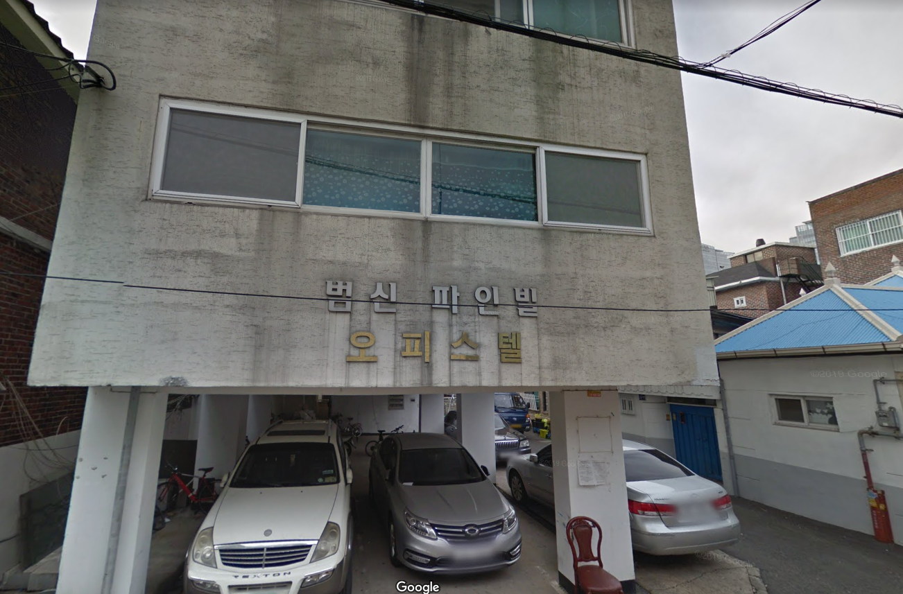
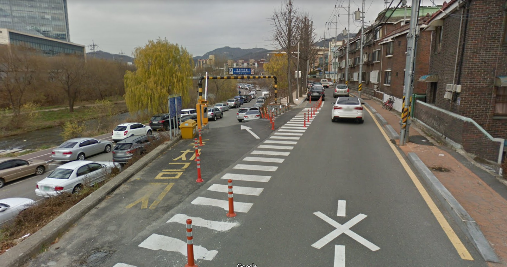
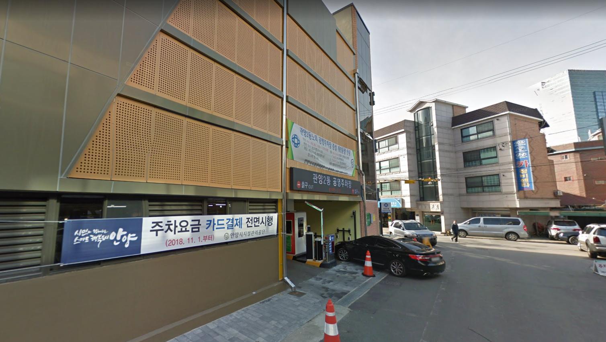

집 위치보기
주차장[1]
주차장[2]
주소 : 경기 안양시 동안구 관양로 237-16
(지번) 관양동 1483-40 범신파인빌 5층
상세보기
주소 : 경기 안양시 동안구 관양동 830
근처 주변 빈자리가 있으시면 주차하시면 됩니다.
상세보기
앱으로 찾아가기
주소 : 경기도 안양시 동안구 흥안대로507번길 23
(지번) 경기 안양시 동안구 관양동 1497
주차장[1] 부근에 자리가 없을경우 이용해주세요
집에서 조금 멀어요
상세보기
앱으로 찾아가기
×
집 상세보기
5층 현관문 비밀번호 : 01074473400

×
주차장[1] 상세보기

×
주차장[2] 상세보기
